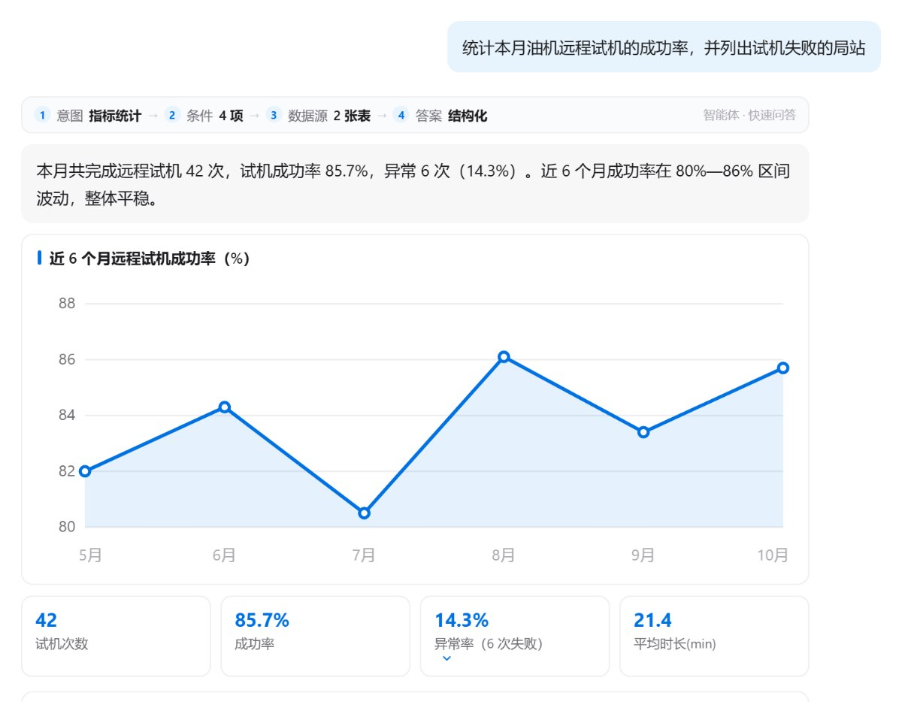
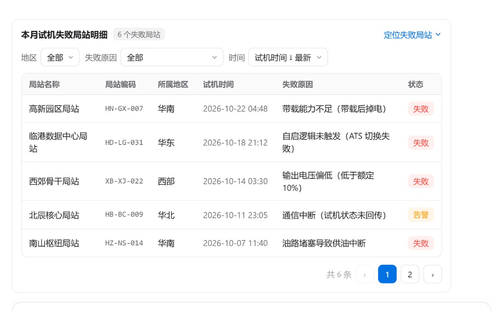
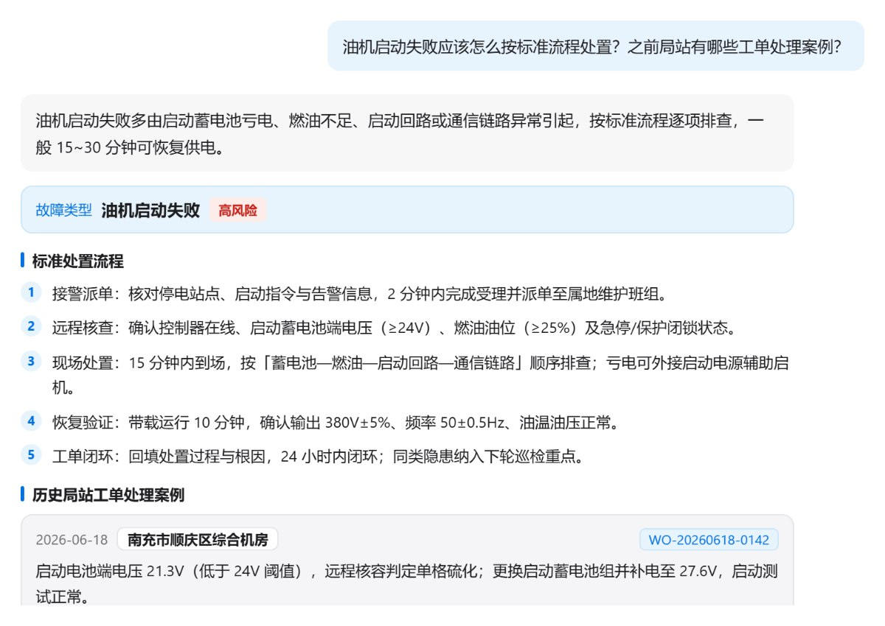

超级数字员工
全局调度中枢 · 跨网元智能运维
统筹全域机房资源调度与跨域协同决策，把单个设备的结论拼成一张全局判断。
不是六个聊天窗口，是六个有明确职责、固定问法与固定呈现的设备专家。
全局调度中枢 · 跨网元智能运维
统筹全域机房资源调度与跨域协同决策，把单个设备的结论拼成一张全局判断。
柴油发电守护者 · 断电应急先锋
专注柴油发电机组状态监测与断电应急响应，试机成功率、油量、带载能力一问答清。
电池健康管家 · 容量预测专家
精准预测蓄电池容量衰减，提前预警健康风险，把"换电池"从被动抢修变成计划动作。
温控节能调度 · 环境优化引擎
智能调控机房温湿度，优化空调能耗效率，高温趋势与热点位置直接给出。
不间断电源哨兵 · 供电保障防线
全天候监控 UPS 运行状态，三相负载、旁路切换、电池后备时间一次说明白。
电源转换中枢 · 供电链路卫士
监控开关电源模块健康，守护供电转换效率，冗余配置与容量水位一屏看清。
运行态势与门禁监控两条线：一条看设备，一条看人。
从全省一路点到局站机房：省 → 市州 → 区县 → 局站，每层带风险分与闭环率，异常点直接在地图上标出来。
门禁与动环数据打通，进出记录、在位状态、异常滞留都能查，配置中心统一维护局站与设备台账。
问数看指标与趋势，问答查故障与规程，两条链路各管一半。
以上问法取自演示环境，正式版按现场设备清单与运维规程替换。
真实演示界面：问一句“油机试机成功率”，回答里直接给结论、趋势、指标和失败局站清单。



带着设备清单与运维规程来，我们把六位数字员工按你的链路配一遍。